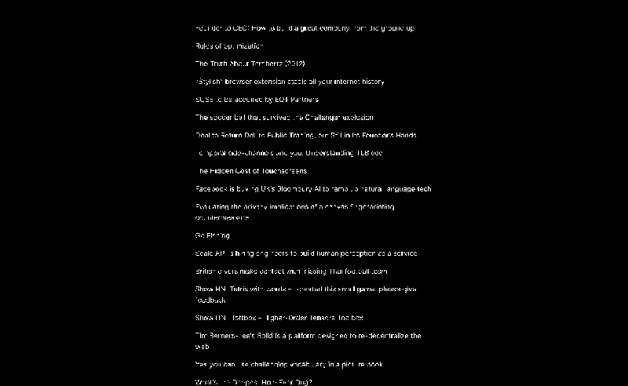

A1418–X0518 · 5.30 h · 3.62 DV · 1.67 VI
Kumo (クモ) is a basic Hacker News client made because I only wanted links and nothing else. View it here.
Attic Kumo (クモ) is a basic Hacker News client made because I only wanted links and nothing else. View it here.A1418–X0518 · 5.30 h · 3.62 DV · 1.67 VI